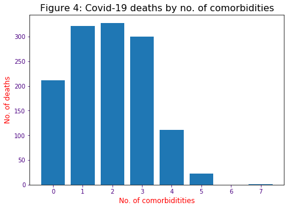
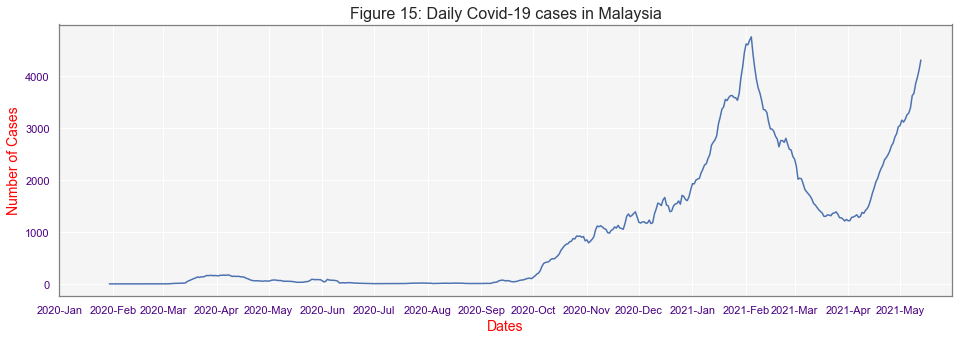
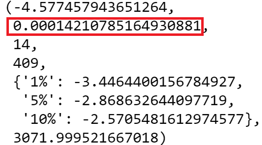

Malaysia Covid-19 Cases
Covid-19 Cases in Malaysia (click and drag to filter by date)
Covid-19 data for cases
| Date | Cases | Discharged | Deaths | ICU |
|---|
Malaysia Covid-19 Deaths
Gender chart
Age group chart
Location chart
Comorbidity chart
Covid-19 Deaths in Malaysia (click and drag to filter by date)
Covid-19 data for deaths
| Date | Gender | Age | Hospital | Location | Comorbidity | Detect to Death |
|---|
Forecast
Daily Covid-19 cases forecast from May 04 2021 - June 12 2021 (click and drag to filter by date)
Total Cases:
Analysis
Part 1 - Deaths
The data for this section of the analysis is from March 3rd 2020 to April 4th 2021. In between this period, there were instances where some or all of the information of the deceased is not available from Kementerian Kesihatan Malaysia Facebook page. The total amount of data not available accounts for 69-83 depending on the category of information. However, this only a small fraction of the overall data, thus the impact on the following analysis is expected to be minimum.
Figure 1 shows Covid-19 deaths in Malaysia according to ten age groups. Based on the figure, it can be seen that Covid-19 disproportionately affect patient with older age. Deaths related to age 60 and above represents 70% of total deaths while this value increases to 94% if age 40 and above were considered.
Table 1 shows the breakdown of deaths percentage and deaths rate ratio by age group. For deaths ratio, age group 10-19 years old is used as the reference since it corresponds to the lowest deaths among all groups. Note that, age group 60-69 have the highest deaths ratio with 77 times of the reference group.
Table 1: Deaths percentage and deaths rate ratio for different age groups
| Criteria | 0-9 years old | 10-19 years old | 20-29 years old | 30-39 years old | 40-49 years old | 50-59 years old | 60-69 years old | 70-79 years old | 80-89 years old | Above 89 years old |
|---|---|---|---|---|---|---|---|---|---|---|
| Deaths % by group | 0.53 | 0.38 | 1.30 | 3.74 | 8.02 | 16.21 | 29.56 | 23.14 | 13.83 | 3.29 |
| Deaths rate ratio | 1.4 | Reference group | 3.4 | 9.8 | 21.0 | 42.2 | 77.4 | 61.0 | 36.2 | 8.6 |
According to Figure 2, men are almost twice likely to die from Covid-19 than women. This finding tallies with a study conducted by Griffith et al. [1] whom reported more men died from Covid-19 in 41 out of 47 countries even though there was no apparent sex differences exist in the number of confirmed cases. The authors attribute this to three factors:
- Biological factors
- Psychosocial factors
- Behavioral factors
For the first factor, inheritance of X-chromosome by the women which contains a high density of immune-related genes make them mount stronger immune responses than men [2]. Besides, female sex hormones, including estrogen, progesterone, and androgens was found affecting the outcomes of viral infections positively. Studies by Oudit and Pfeffer [3] has shown men have higher plasma angiotensin-converting enzyme 2 (ACE2) levels than women. This impact men negatively since severe acute respiratory syndrome coronavirus 2 (SARS‐CoV‐2) uses the SARS‐CoV receptor ACE2 for entry into the host cell [4]. Thus, men are susceptible for higher tissue expression of the ACE2 receptor for SARS‐CoV infections or the consequences of SARS-CoV-2.
Concerning psychosocial factor, men tend to view Covid-19 as less harmful to them than woman [5]. These downplay of consequences make them more inclined to join large gatherings or avoiding close physical contact with others [6, 7, 8]. In addition, men behavioural pattern that includes higher rates of tobacco use and alcohol consumption increases their mortality rate due to Covid-19 comorbidity diseases related to these activities [6, 9, 10, 11]. Men also tend to have lower rates than women of practising infection prevention behavioural which includes handwashing, social distancing, and wearing masks [6, 9, 10, 12].
Figure 3 show the break down of Covid-19 comorbidities among those who died from the disease. These comorbidities are mainly obtained from Centers for Disease Control and Prevention (CDC) [13] and other resources [14, 15, 16, 17] are then used to filter general diseases described by the Malaysia Ministry of Health (MOH) on the deceased medical conditions. From Figure 3, it can be seen that high blood pressure is the most frequent comorbidity found in the deceased representing 33.7% followed by diabetes (25.6%), chronic kidney disease (12.2%), heart disease (11.2%), stroke (5.8%) and others (11.5%).
Figure 4 shows the number of Covid-19 related comorbidities the deceased had. 84% of the deceased had at least one or more comorbidities related to Covid-19 while the remaining 16% did not have any Covid-19 related comorbidities.
Figure 5 shows the number of days from the date when Covid-19 was first detected on the patient to the date when the patient died. As seen from the figure, most deaths occurred between 0-9 days which represents 66% of the deaths and this number grows to 87% if 0-19 days were considered. Figure 6 zoom in further on the period between 0-9 days. As seen from Figure 6, most deaths occurred one day after Covid-19 was detected which represents almost a quarter (24%) of the total deaths.
Figure 7 shows how Covid-19 deaths are distributed by the day. Based
on Figure 7, Saturday, Sunday and Monday reported deaths
number below the average value of 197. In order to determine whether this has any significance, the Chi-square
test was carried out with the null and alternative hypothesis are as follows:
Ho: There is an equal probability that death can occur on any day.
Ha: There is not an equal probability that death can occur on any day.
The Chi-square results in a p-value smaller than 0.05 but larger than 0.01. Thus, at 95% confidence interval, the null hypothesis is rejected and the alternative hypothesis whereby there is not an equal probability that death can occur on any day is accepted.
Figure 8 shows the number of deaths according to the states in Malaysia. Note that, location data for five deaths that occurred in 2nd April 2021 are not available from MOH. This location is estimated by the frequency of death that occcured on states 7 days prior and 7 days ahead of the missing date data. According to Figure 8, Sabah (412) recorded the highest number of deaths followed by Selangor (369), Sarawak (137), Kuala Lumpur (125), Johor (110), and the rest (227).
The number of Covid-19 cases and the number of deaths have a strong linear correlation as can be seen from Figure 9. Based on the data, the relationship between the number of Covid-19 cases and deaths has a Pearson correlation score of 0.87, which indicates a strong correlation. Sabah is a peculiar state whereby the number of deaths is way higher compared to the positive Covid-19 cases registered in their state. If Sabah was removed from the dataset, the Pearson correlation scores move close to 1 (0.97) which indicates that Sabah deaths to case ratio do not tally with the rest of the states in Malaysia.
The impact of population density on the number of deaths per 100,000 cases is investigated. The corresponding plot is shown in Figure 10. Visible inspection clearly shows that there is no correlation between these two criteria and the Pearson correlation score of close to 0 (-0.09) support this claim. This finding may be at odd against the common conception that highly densely populated places should result in more Covid-19 deaths. However, many other researchers found that this may not be the case. Hamidi et al [18]. from Johns Hopkins Bloomberg School of Public Health claim that apart from metropolitan areas, death rate is found to be inversely proportional to population density in the USA. The authors attributed this inverse mortality relation to the availability of better healthcare systems at higher density locations. A very recent study by the Carozzi et al.[19] from the London school of economics and Institute of Labour Economics, based on urban Covid-19 cases in the USA, found that the denser populated region tends to experience earlier breakout than less densely populated region. However, both Covid-19 infection and death rates are unrelated to urban population density.
Next, the socio-economic impact on the mortality rate is investigated. The monthly median income for each state is obtained from The Household Income Survey [20] conducted by the Departments of Statistics of Malaysia. Figure 11 shows the plot of deaths per 100,000 cases versus median income for different states in Malaysia. These two criteria have a Pearson correlation of -0.03 which indicates no correlation. Thus, it can be concluded that socio-economic factors not a determinant factor for Covid-19 deaths in Malaysia.
Data used for Figure 9-11 is presented in Table 2.
Table 2: Data for Covid-19 cases, deaths, population, size and median income for different states in Malaysia.
| States | Total number of deaths | Total number of cases | Population [21] (million) | Size[22] (km) | Median income[20] (RM) |
|---|---|---|---|---|---|
| Selangor | 369 | 123,589 | 6.54 | 8,104 | 8,210 |
| Sabah | 412 | 56,795 | 3.91 | 73,631 | 4,235 |
| Johor | 110 | 43,316 | 3.78 | 19,210 | 6,427 |
| Kuala Lumpur | 125 | 40,092 | 1.77 | 243 | 10,549 |
| Negeri Sembilan | 31 | 17,915 | 1.13 | 6,686 | 5,055 |
| Sarawak | 137 | 23,940 | 2.83 | 124,450 | 4,554 |
| Pulau Pinang | 22 | 18,284 | 1.77 | 1,048 | 6,169 |
| Perak | 45 | 14,061 | 2.51 | 21,035 | 4,273 |
| Kedah | 25 | 9,081 | 2.19 | 9,500 | 5,522 |
| Melaka | 21 | 6,902 | 0.93 | 1,664 | 6,054 |
| Kelantan | 28 | 8,448 | 1.91 | 15,099 | 3,563 |
| Pahang | 18 | 4,695 | 1.68 | 36,137 | 4,440 |
| Terengganu | 14 | 3,895 | 1.26 | 13,035 | 5,545 |
| W.P Labuan | 13 | 2,427 | 0.10 | 91 | 6,726 |
| W.P Putrajaya | 8 | 1,275 | 0.11 | 49 | 9,983 |
| Perlis | 2 | 349 | 0.25 | 821 | 4,494 |
As mentioned earlier Sabah is a peculiar state whereby the percentage of death to the number of cases (0.73%) is 2.4 times than the national value excluding Sabah (0.30%). The question is why it so? One hypothesis will be that Sabah has a population distribution largely concentrated on older age than the rest of the country. As mentioned earlier, 70% of death occurred for Covid-19 patient aged 60 and above. To test this hypothesis, the similarity between the nation age distribution with Sabah age distribution is computed using data from Malaysia goverment Population Quick Info website. The data obtained from the website is shown in Table 3.
Table 3: Age distribution for states in Malaysia excluding Sabah and Sabah.
| Age Range | States in Malaysia excluding Sabah ('000) | States in Malaysia excluding Sabah (%) | Sabah ('000) | Sabah (%) |
|---|---|---|---|---|
| 0-9 | 4508.1 | 15.7 | 588.1 | 15.0 |
| 10-19 | 4591.3 | 16.0 | 748.5 | 19.2 |
| 20-29 | 5435.2 | 18.9 | 945.1 | 24.2 |
| 30-39 | 4751.8 | 16.5 | 694.5 | 17.8 |
| 40-49 | 3376.6 | 11.7 | 413.7 | 10.6 |
| 50-59 | 2822.0 | 9.8 | 279.7 | 7.2 |
| 60-69 | 1950.9 | 6.8 | 160.1 | 4.1 |
| 70-79 | 954.9 | 3.3 | 58.4 | 1.5 |
| 80-84 | 208.6 | 0.7 | 11.5 | 0.3 |
| Above 85 | 149.4 | 0.5 | 8.9 | 0.2 |
Based on the data presented in Table 3, the age distribution (fraction) between Sabah and the rest of the states in Malaysia is very similar based on the Pearson correlation score of 0.97. Besides, the Manhattan distance between these two criteria is equal to 7.7 which indicates the age distribution is not far apart. The most significant information that is obtained from Table 3 is that Sabah has a younger population than the rest of the states in Malaysia. 76.2% of the Sabah population is between the age of 0-39 years old, while only 67.1% population for the rest of the states in Malaysia fall in this category. Thus, it is safe to reject the hypothesis that Sabah high deaths to Covid-19 ratio are due to population distribution that is largely concentrated on older age.
The second hypothesis that can be proposed is that Sabah have a population that is less healthy than the rest of the state in Malaysia. As mentioned earlier 84% of deceased has at least one or more Covid-19 comorbidities. In order, to validate this hypothesis, data from Malaysian Health at Glance [23] report by MOH is examined. Based on Figure 12, Sabah has a morbidity rate due to tracer conditions for hypertension and diabetes lower than the national average. Note that these two diseases were the top two comorbidities associated with Covid-19 deaths (Figure 3). While the third most frequent comorbidities associated to Covid-19 deaths i.e. chronic kidney disease (Figure 3) is caused by diabetes and high blood pressure according with National Kidney Foundation. Thus, there is no enough evidence to support the hypothesis that Sabah high deaths in Covid-19 cases are due to their population being less healtier than the rest of the states in Malaysia.
Figure 12: Morbidity rate for tracer conditions
The third probable hypothesis is that the Sabah Covid-19 positive cases are under-reported. To validate this claim, the Covid-19 positive rate shown in Figure 13 is examined [24]. According to criteria published by WHO, in May 2020, a positive rate of less than 5% is one indicator that the Covid-19 epidemic is under control in a country [24]. A rise in the positive rate is an indication that the virus is spreading faster than the growth that is seen in confirmed cases [24]. As shown in Figure 13, the positive rate in Malaysia exceeds the 5% threshold around November 2020.
Coincidentally, this was the time when Sabah was experiencing its worst outbreak as shown in Figure 14.Thus, a lot of Covid-19 cases likely goes unreported during this period and the actual number of cases for Sabah should be more than 100,000 and not 56,795 as what was reported.
Part 2 - Covid-19 case prediction
The Covid-19 daily cases are averaged for 7 days for the period from 24th Jan 2020 to 12th May 2021 to smoothen the day-to-day fluctuations. The resulting graph is shown in Figure 15.

In order to predict the number of cases more accurately, the mobility of Malaysian is used as exogenous variables in time series analysis. This mobility data is obtained from ‘COVID-19 Community Mobility Reports’ by Google [25] who collected extensive anonymised mobile device GPS user data and estimates the percentage change in activity in certain categories by country, states and day. For this study, two categories i.e. ‘places of work’ and ‘retail & recreation’ (including restaurants, cafes, shopping centres, theme parks, museums, libraries, and movie theatres) will be used. Figure 16 shows the plot of these two categories.
Note that in Figure 16, the dashed line represents Malaysia government lockdowns dates to curb the pandemic situation. In total, three types of lockdowns applicable to the whole nation i.e. movement control order (MCO), conditional movement control order (CMCO) and recovery movement control order (RMCO) with the order of severity on the restriction movement decreases from MCO, CMCO and RMCO. From Figure 16, there are instances where the workplace (blue line) mobility decreases severely without any change in lockdown condition. These are due to public holidays. The impact of public holidays however does not necessarily decrease the mobility in retail and recreational (green line) unlike for workplace mobility. From Figure 16, it can also be noticed that there is a small cyclic behaviour in both categories with prevalence in the workplace. This behavioural is due to the change in the level of activities that occur throughout each week. For the workplace, Monday normally shows the highest percentage of mobility and then starts decreasing through the week until Sunday which represents the lowest mobility percentage. For retail and recreational, Sunday or Monday has the highest peak and mobility starts declining until Saturday. In order to flatten these peaks and troughs, the values are averaged for 31 days for time series analysis.
Differencing approach is applied on the daily cases values in order to convert the data into a stationary time series. Next, Dicky-Fuller test was carried out to confirm the new transformed data stastifiy stationarity condition. The resulting calculation (see below) shows the level of significance is close to 0, confirming stationarity.
ACF and PACF graph are plotted as shown in Figure 17 and Figure 18 to determine the number of lags to be considered in auto regression moving average (ARMAX) model.

For the ACF (Figure 17) and PACF (Figure 18), lags until day 24 shows values above significance level.
ARMAX model with lags up to 7 days for AR and MA are tested. In total 63 different models were simulated and only 12 models show result where all coefficients are above 5% siginficance level. The Log Likelihood and AIC for these models are summarised in the Table 4 below.
Table 4: Log Likelihood and AIC values for different
| ARMAX Model | Log Likelihood | AIC |
|---|---|---|
| (1,0) | -1649.636 | 3309.271 |
| (1,2) | -1646.801 | 3307.603 |
| (1,3) | -1640.801 | 3297.601 |
| (2,3) | -1621.950 | 3261.900 |
| (3,3) | -1619.778 | 3259.556 |
| (3,2) | -1620.827 | 3259.654 |
| (1,5) | -1621.261 | 3262.522 |
| (0,5) | -1622.653 | 3263.307 |
| (4,6) | -1589.899 | 3207.797 |
| (3,6) | -1593.448 | 3212.896 |
| (2,6) | -1603.771 | 3231.542 |
| (4,7) | -1588.195 | 3206.390 |
From Table 5, ARMA model 4,7 has the highest Log likelihood and lowest AIC values compared to the rest of the models. Thus, this model residual will be examined further to determine whether it is a good fit. First, the Dicky-Fuller test show the significance level of the residual is 0, thus it is stationary.

Second, the residual values are checked for autocorrelation as shown Figure 19. All lags show ACF values below significance level apart from lags 24 and 31 . However, since these values are far down the line, the model prediction is expected not to be affected significantlly.
The residuals shown in Figure 20 are plotted to check whether it resembles white noise. As seen from the figure, there is no clear pattern exist, thus the residuals represent white noise. However, it can be noticed that there were large peaks in June and in September 2020 due to the model inability to adapt to sudden large changes quickly.

Figure 21 shows how the model fits against the data. The green line represents the predictions, while the blue line represents the actual data

References
[2] Sharma G, Volgman AS, Michos ED. Sex differences in mortality from COVID-19 pandemic: are men vulnerable and women protected? JACC Case Rep 2020.
[3] Gavin YO, Marc AP. Plasma angiotensin-converting enzyme 2: novel biomarker in heart failure with implications for COVID-19. European Heart Journal; 41(19): 1818–1820; May 2020.
[4] Matsuyama S, Nagata N, Shirato K, Kawase M, Takeda M, Taguchi F. Efficient activation of the severe acute respiratory syndrome coronavirus spike protein by the transmembrane protease TMPRSS2. J Virol; 84(24):12658–64: 2010.
[5] Baker P, White A, Morgan R. Men’s health: COVID-19 pandemic highlights need for overdue policy action. Lancet 2020;395(10241):1886–8
[6] McCarthy J. US coronavirus concerns surge, government trust slides. Gallup: Politics. Published March 16, 2020. Accessed April 20, 2021.
[7] Ewig C. Gender, masculinity, and COVID-19. The Gender Policy Report. Published April 1, 2020. Accessed April 20, 2021.
[8] Smith JA, Griffith DM, White A, et al. COVID-19, equity and men’s health: using evidence to inform future public health policy, practice and research responses to pandemics. Int J Men Soc Commun Health . Forthcoming.
[9] White A. Our own fault? Men and COVID-19. Men’s Health Forum [blog]. Published March 31, 2020. Accessed April 20, 2021.
[10] Woodyatt A, Greene R. Men in low-skilled jobs are dying from coronavirus at a higher rate than other workers, UK figures show. Cable News Network. Published May 11, 2020. Accessed April 20, 2021.
[11] Mellström U. COVID-19, masculinity and risk/at risk. NORMA 2020;15(2):94–6.
[12] Garcia S, Albaghdadi MS, Meraj PM, Schmidt C, Garberich R, Jaffer FA, et al. Reduction in ST-segment elevation cardiac catheterization laboratory activations in the United States during COVID-19 pandemic. J Am Coll Cardiol 2020;75(22):2871–2.
[13] Centers for Disease Control and Prevention. People with Certain Medical Conditions. U.S. Department of Health & Human Services. Published Mar 29, 2021. Accessed April 27, 2021.
[14] Tao Z, Xu J, Chen W, et al. Anemia is associated with severe illness in COVID‐19: A retrospective cohort study. J Med Virol. 2021; 93: 1478–1488.
[15] Subramaniam V. Information About COVID-19 for Bronchiectasis Patients. BioNews Services, LLC. Published Mar 29, 2021. Accessed April 21, 2021.
[16] Mathian A, Mahevas M, Rohmer J, et al. Clinical course of coronavirus disease 2019 (COVID-19) in a series of 17 patients with systemic lupus erythematosus under long-term treatment with hydroxychloroquine. Annals of the Rheumatic Diseases 2020;79:837-839.
[17] Strausz S, Kiiskinen T, Broberg M, et al. Sleep apnoea is a risk factor for severe COVID-19. BMJ Open Respiratory Research 2021;8:e000845.
[18] Hamidi S, Sabouri S, Ewing R. Does density aggravate the COVID-19 pandemic? J Am Plan Assoc. 2020.
[19] Carozzi F, Provenzano S, Roth S. Urban density and COVID-19. IZA Institure of Labor economics,discussion paper series 2020; IZA DP No. 13440
[20] The Household Income Survey by Departments of Statistics of Malaysia, 2019.
[21] Population Quick Info by Departments of Statistics of Malaysia, 2020.
[22] Preliminary Count Report by Departments of Statistics of Malaysia, 2010.
[23] Chronic Kidney Disease (CKD) Symptoms and causes. Published February 02, 2017. National Kidney Foundation Inc.
[24] Max Roser, Hannah Ritchie, Esteban Ortiz-Ospina and Joe Hasell. Coronavirus Pandemic (COVID-19). Published online at OurWorldInData.org, 2020.
[25] Google. COVID-19 Community Mobility Reports. Accessed May 13, 2021.